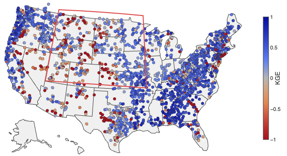

CTSM-CONUS
High-resolution (1/8th degree) CTSM CONUS-wide hydrology evaluation and community baseline simulation datasets

About
The Community Terrestrial Systems Model (CTSM) now offers multiple process configuration options, including satellite vs. prognostic phenology, static vs. evolving land cover, irrigation, and hillslope hydrology. How these choices affect simulated snow, soil moisture, runoff, evapotranspiration and streamflow over the contiguous United States (CONUS) at spatial scales relevant to hydrology and water resources has not been systematically evaluated, which is the primary motivation for this study. The core science questions we address are the following:
Which CTSM configuration choices most influence fine-scale CONUS land and hydrology simulation performance, and how do the resulting simulations compare with observations?
This project runs CTSM coupled to the mizuRoute river routing model at ~12 km (0.125°) resolution over CONUS. Starting from a control configuration, each experiment changes one process option: irrigation, evolving land cover, hillslope hydrology, or prognostic phenology. Simulated streamflow is evaluated against approximately 2,300 stream gauges from 1980 to 2018. Details are summarized in the tables below.
The simulations are intended as a reusable baseline for the CTSM community, for choosing configurations in hydrologic applications, and as a foundation for follow-on work, including model calibration efforts.
Simulation setup
| Model | CTSM (CLM6.0), release tag ctsm5.4.049 cloned from ESCOMP/CTSM, coupled to mizuRoute |
|---|---|
| Grid | NLDAS-2 0.125° (224 × 464), 25–53°N, 125–67°W |
| River network | MERIT-Hydro v1, 227,247 reaches |
| Forcing | NLDAS-2, 1980–2018 |
| Evaluation period | Oct 1980 – Sep 2018 |
| Soil | 20 layers with a maximum depth of 8.5 m |
| Spinup | 22–24 years with NLDAS-2 forcing from 1980 onward; each evaluation run then restarts in Oct 1980 from the spun-up state (details in the technical note) |
| Output | Monthly land fields and monthly routed streamflow |
Configurations
| Configuration | Change from control | Compset |
|---|---|---|
| Control | Satellite phenology (SP), static year-2000 land cover, irrigation off, no hillslope hydrology | 2000_DATM%NLDAS2_CLM60%SP_SICE_SOCN_MIZUROUTE_SGLC_SWAV |
| Irrigation | Irrigation on | 2000_DATM%NLDAS2_CLM60%SP_SICE_SOCN_MIZUROUTE_SGLC_SWAV |
| Evolving land cover | Transient land use and land cover (1850–2023 dataset); irrigation on | HIST_DATM%NLDAS2_CLM60%SP_SICE_SOCN_MIZUROUTE_SGLC_SWAV |
| Hillslope | Hillslope hydrology with lateral flow and hillslope routing | 2000_DATM%NLDAS2_CLM60%SP_SICE_SOCN_MIZUROUTE_SGLC_SWAV |
| Prognostic phenology | Prognostic (BGC) phenology in place of SP | 2000_DATM%NLDAS2_CLM60%BGC_SICE_SOCN_MIZUROUTE_SGLC_SWAV |
Using the dashboard
- Pick a gauge by clicking it on the map or by searching by name or ID. Map colours show skill for the chosen metric (NSE, KGE, or PBIAS); blue is always better.
- Time series: the wide panel shows monthly streamflow for every configuration against observations (black). The first three years are shaded as spin-up.
- Seasonal panels: six water-year climatologies of basin-averaged fields over the gauge's upstream area. Streamflow is fixed; the other five panels can show any variable.
- Difference mode subtracts a chosen reference configuration from every panel; control is the default. Each configuration minus control shows the effect of its one change, except Evolving land cover, which also has irrigation on (CTSM's default with the transient land-use dataset). To see the land-cover effect alone, choose Irrigation as the reference.
- Link copies a permalink to the current view, and CSV downloads the plotted data.
Evaluation data and methods
For this study, we adopt the NLDAS-2 1/8th degree implementation of CTSM that was originally developed to assess its potential for land-atmosphere coupling to regional numerical weather prediction (NWP) applications. The CTSM implementation was configured on an NLDAS-2 grid (1/8th degree, ~12 km horizontal spacing) over CONUS (Mitchell et al., 2004).
The streamflow and watershed-based analysis provided in this analysis leveraged multi-year, multi-agency modeling and dataset resources developed at NCAR with USACE, USBR, and NASA funding to support US-wide water security assessment initiatives. These efforts developed a CONUS streamflow validation dataset comprising over 2,200 river flow gauges that combined natural/unimpaired headwaters watersheds with naturalized/reconstructed streamflows that were obtained from USACE and USBR offices through an extended discovery effort. For some gauges, naturalized flows are estimated only on a monthly basis (e.g., from USBR for the Colorado River basin), thus this timestep was adopted for the evaluation metrics shown in this analysis. These sponsored efforts also created the mizuRoute CONUS-wide MERIT-Hydro channel network (Yamazaki et al., 2019) implementation that is used here, including the simulation-to-gauge correspondences that enabled a straightforward analysis of CTSM water balances for a comprehensive collection of US watersheds. In the interactive website, the watershed state and flux analyses use an area-weighted mapping from the model grid to each gauge's drainage area, such that upstream averaging areas match reported basin areas to the extent possible for all gauges.
Simulation skill (performance) is summarized by several metrics, including the Nash–Sutcliffe efficiency (NSE), which measures how closely simulated monthly flows track observations (1 is perfect; below 0 means the simulation is a worse predictor than the observation mean), and the Kling–Gupta efficiency (KGE), which combines correlation, bias and variability into one score (1 is perfect; below −0.41 has less information than the climatological mean). A recent discussion of these metrics for hydrologic performance evaluation is given in Clark et al. (2026). Percent bias (PBIAS) is the difference between simulated and observed mean flow.
Notes and caveats
- No CTSM parameter tuning exists for the NLDAS-2 forcing configurations, so all runs use the default GSWP3 tuning.
- Irrigation withdrawals are not limited by available river water. Where river storage is low, irrigation can add water to the system and raise downstream flow.
- The Prognostic phenology configuration starts from a global restart interpolated to this grid. Soil carbon is not in equilibrium, so this configuration is intended for evaluating water and energy fluxes, not carbon.
- Monthly metrics at gauges with near-zero flow, mostly in the arid West, can be extreme and should be read with care.
- USACE: US Army Corps of Engineers; USBR: US Bureau of Reclamation.
Team
Mozhgan Farahani, Andy Wood, Sean Swenson, Naoki Mizukami from the Terrestrial Sciences Section, CGD Laboratory, NSF NCAR. Dr. Farahani conducted all CTSM modeling and analysis efforts, with input from team members, and developed this website in coordination with Andy Wood and with facilitation by NRIT.
Acknowledgments
Mozhgan Farahani was supported by the CGD Science Innovation Fund (SIF-T) during August–September of FY26 to undertake this CTSM intercomparison project. Andy Wood was supported by funding from the NCAR Water Systems Program. Computing was provided on NCAR's Derecho and Casper systems. We thank NRIT for creating a public-facing server space to host this website. We also acknowledge the contribution of (as yet) unpublished CONUS modeling datasets developed in water security projects supported by the U.S. Army Corps of Engineers and the US Bureau of Reclamation (led by Andy Wood, with dataset QC and standardization by Naoki Mizukami).
References
- Clark, M. P., et al. (2026). Comment on Williams (2025): “Friends don't let friends use NSE or KGE for hydrologic model accuracy evaluation: A rant with data and suggestions for better practice.” Environmental Modelling & Software, 197, 106869. https://doi.org/10.1016/j.envsoft.2026.106869
- Mitchell, K. E., et al. (2004). The multi-institution North American Land Data Assimilation System (NLDAS): Utilizing multiple GCIP products and partners in a continental distributed hydrological modeling system. Journal of Geophysical Research, 109, D07S90. https://doi.org/10.1029/2003JD003823
- Yamazaki, D., Ikeshima, D., Sosa, J., Bates, P. D., Allen, G. H., & Pavelsky, T. M. (2019). MERIT Hydro: a high-resolution global hydrography map based on latest topography dataset. Water Resources Research, 55, 5053–5073. https://doi.org/10.1029/2019WR024873
Links
- Technical note
- GitHub configuration archive
- Contact: Mozhgan Farahani, mozhgana@ucar.edu
Last updated: September 2026